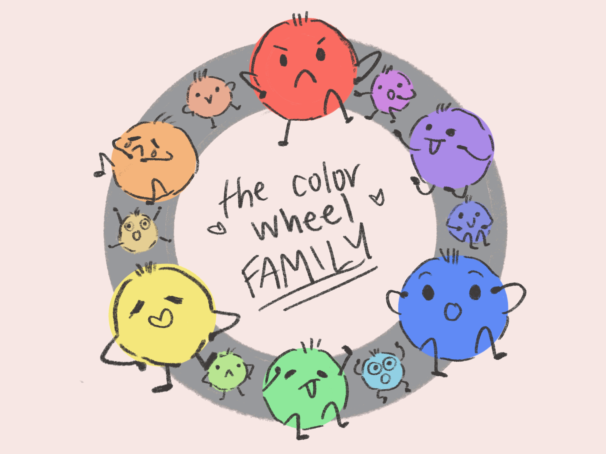
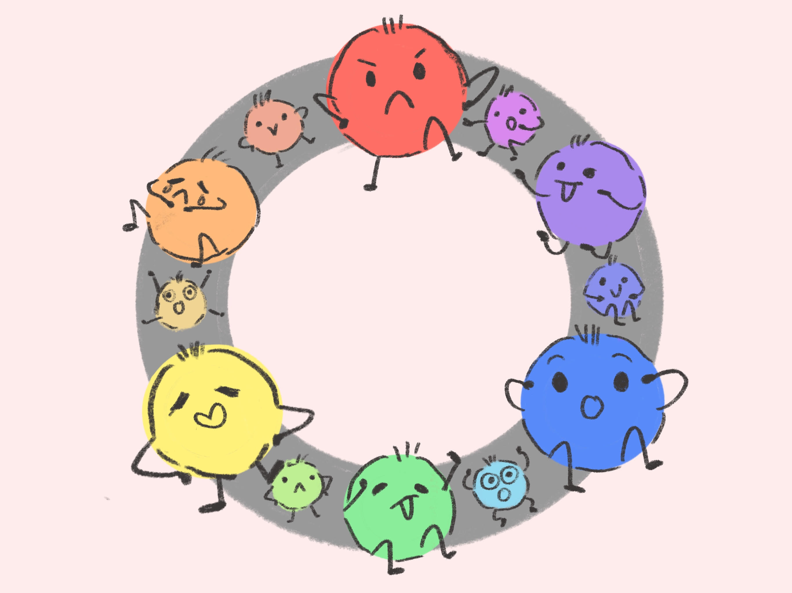
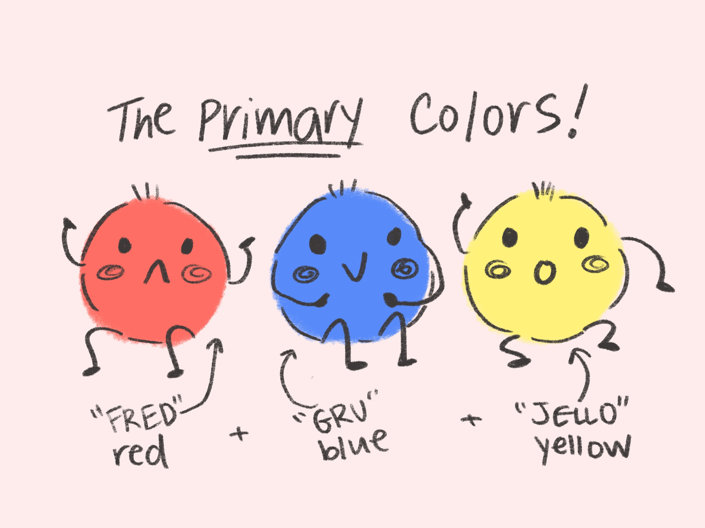
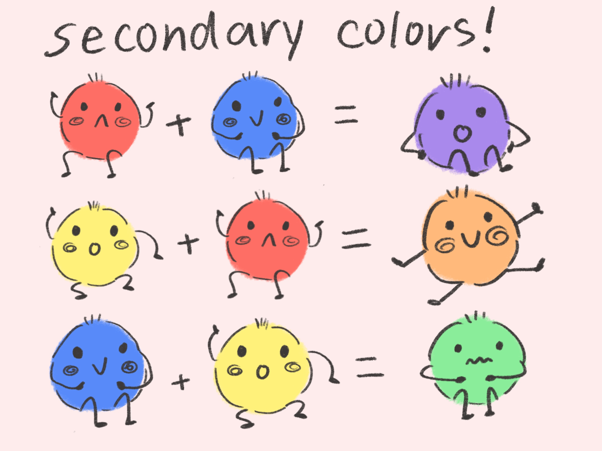
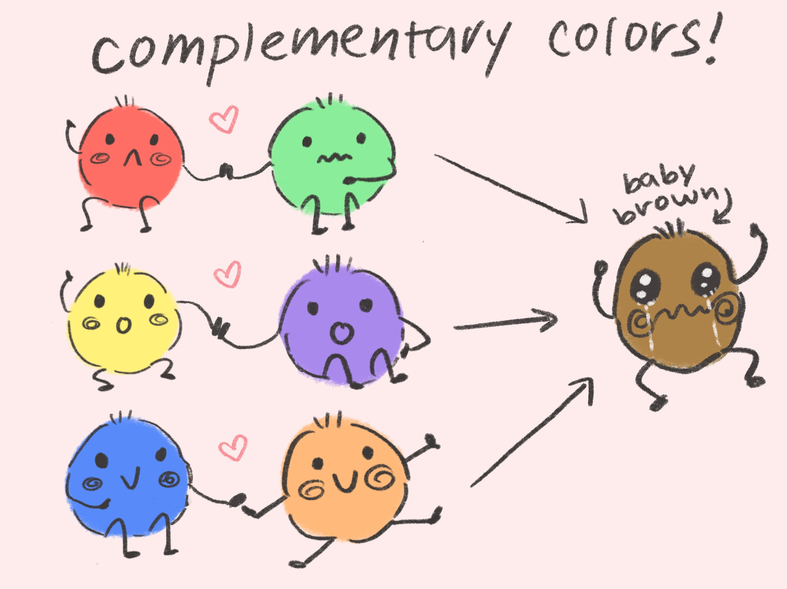
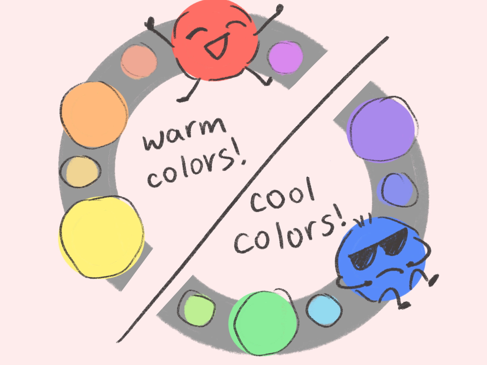
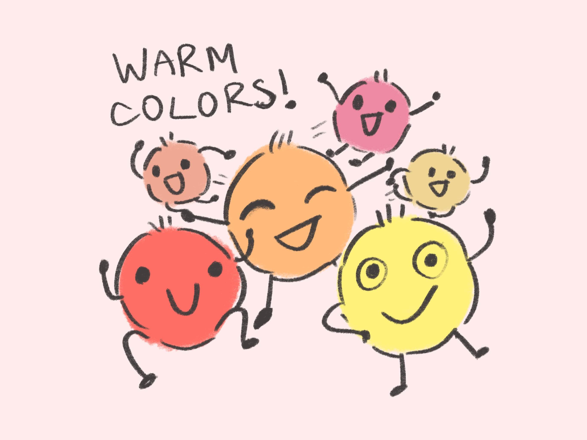
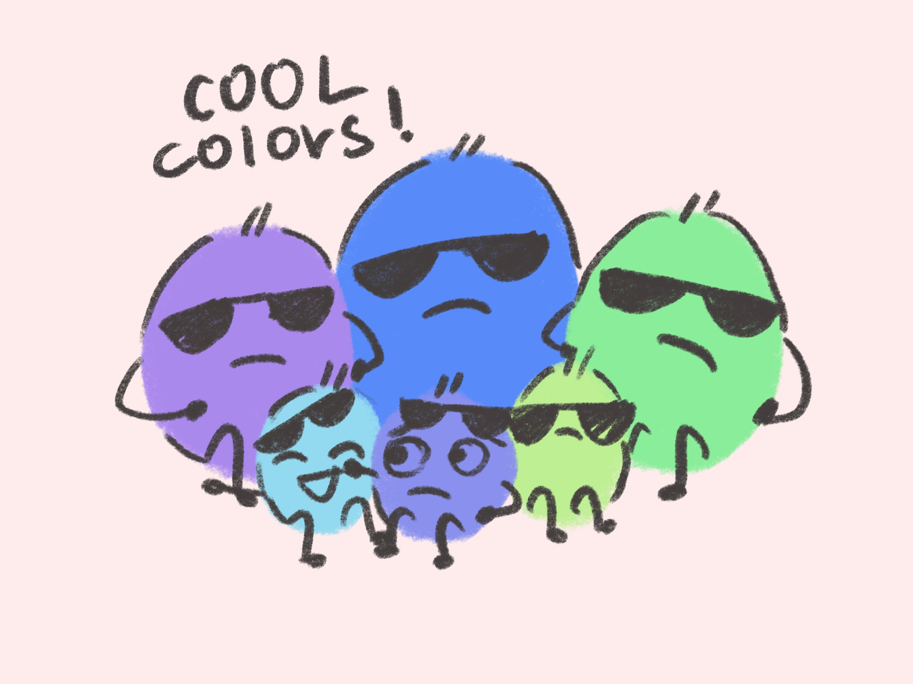

color theory!

let's learn color theory with the help of the color wheel family!
on the right is an example of a color wheel! a color wheel organizes colors in the spectrum, by dividing the entire spectrum of colors into 12 different hues.


on the left are the primary color brothers! they are "fred" red, "gru" blue, and "jello" yellow! these three colors can't be mixed from any other colors!
when the primary colors are mixed together in various different ways, we can form secondary colors, like purple, orange, and green!


complementary colors are colors on the opposite sides of the color wheel! while they look fantastic together, they all end up mixing to neutral "baby" brown!
lastly, we will look at warm and cool colors! warm colors represent the left side of the color wheel, like red, orange, and yellow, while the cool colors are on the right side! (cool colors are green, blue and purple!


check out the family portraits of the warm and cool colors!

thank you so much for partying with the color family, and we hope they taught you some important lessons! see you soon!